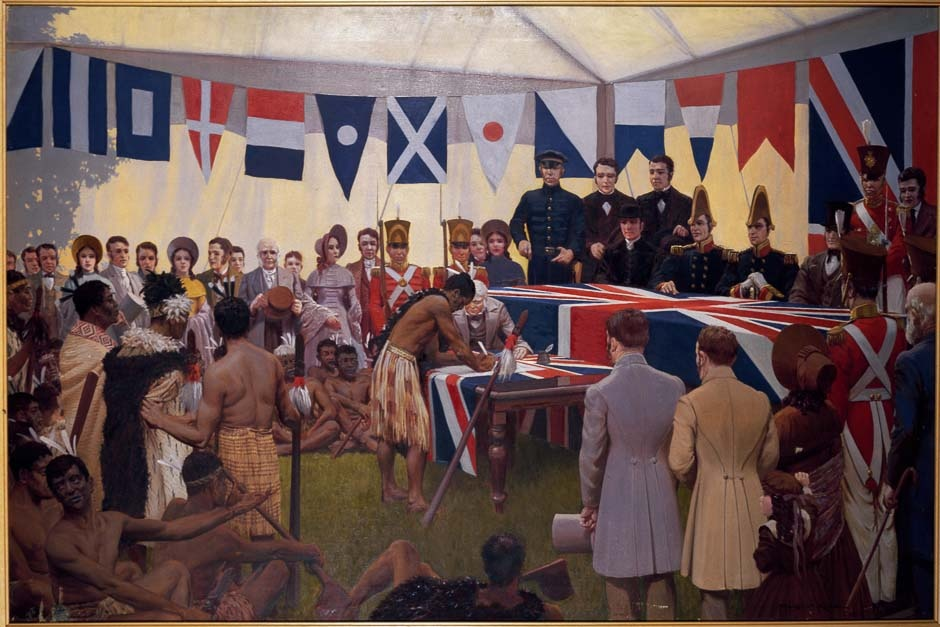

12 Moments That Shaped New Zealand's History
New Zealand is a young country with a colourful history. Archaeological findings trace the first human settlement to have occurred around 1280-1300AD; the first Maori are believed to have arrived in the late 13th century; the first European contact was made in 1642 (with the arrival of Abel Tasman) and 1769 (James Cooks’ voyage) respectively. A number of moments shaped the country afterwards. Here are 12 key moments you should know about.
1
New Zealand
1840: The Treaty of Waitangi signing
New Zealand’s founding document, known as the Treaty of Waitangi, is an agreement between the British Crown and the some 540 Maori rangatira (chiefs). Historically, this was a controversial document because the Maori and English versions stipulated different things about land ownership rights and sovereignty. In present times, the Treaty is fully honoured in legislation and court proceedings.
2
January
1845-72: The New Zealand Wars
A series of land wars in the 19th century brought drastic changes to New Zealand society. Between the 1820s and 1830s, the inter-tribal Musket Wars decimated many Maori iwi (tribes) and led to a number of land ownership complications. This, along with the Treaty of Waitangi, paved the way for the New Zealand Wars – a collection of conflicts between European settlers and Maori who wanted to protect their territories. Most of the casualties during the New Zealand Wars were Maori.
3
March
1893: New Zealand gives women the right to vote
On 19 September 1893, New Zealand became the first self-governing country to give women the right to vote in parliamentary elections. The Electoral Act was signed into law by then-governor Lord Glasgow and came about after years of suffrage movements and petitions. These campaigns were led by Kate Sheppard and inspired by the American-based Women’s Christian Temperance Union.
4
March
1914: World War I and The Gallipoli Campaign
It is generally agreed that the Gallipoli during the First World War fostered a sense of national identity in New Zealand and Australia. One in four New Zealand men between the ages of 20 and 45 who were sent to battle were either killed or wounded – this in turn affected many families and communities back home. In Gallipoli, there were 2,779 New Zealand casualties, as well as 8,700 Australian deaths. ANZAC Day on 25 April remembers the death of these soldiers.
5
March/April
1931: The Hawke’s Bay Earthquake
On 3 February 1931, the Hawke’s Bay region was struck by New Zealand’s deadliest earthquake. Napier and Hastings were hit the hardest by the 7.8 magnitude quake, which took the lives of at least 256 people – some unofficial accounts place the number at around 258. As a silver lining, the rebuild efforts transformed the Hawke’s Bay into a thriving Art Deco region.
6
April
1947: New Zealand gains independence from Britain
New Zealand stopped being a colony in 1907, when it was officially recognised as a British Empire dominion. This, however, did not make any difference to the country in terms of legal or political standing – at the time, very few New Zealanders wanted full independence from Britain. While the Statute of Westminster 1931 removed London’s right to legislate for British dominions without explicit permission, New Zealand chose not to ratify the document until 1947.
7
April
1970s: The Dawn Raids
The Dawn Raids are known for being one of the darkest moments in New Zealand race relations. Between 1974 and 1976, the police began raiding the homes of suspected ‘overstayers’ – temporary workers with expired visas. This was usually done at night or in the early hours of the morning. Samoan and Tongan migrants were singled out, despite the fact that many temporary immigrants had actually come from Australia and Britain.
8
May
1985: The sinking of the Rainbow Warrior
New Zealand had a well-established anti-nuclear stance by the mid 1980s. The Rainbow Warrior bombing was the first act of terrorism in New Zealand territory – and, while it was targeted at Greenpeace protests against nuclear testing, New Zealanders took the attack personally. This ultimately led to deteriorating relations between New Zealand and France for the remainder of the 20th century. In 2015, the French intelligence agent involved in the attack made a public apology for his actions.
9
June/July
1993: The introduction of the MMP voting system
A binding referendum in 1993 led New Zealand to change its voting system from the traditional first past the post (FPP) approach to the more inclusive mixed-member proportional (MMP) method. This is touted as being the most dramatic change in New Zealand’s electoral history after the women’s suffrage movement – allowing more political parties to emerge, thus enabling parliament to become more representative of the society at large.
10
November
1997: New Zealand’s first woman Prime Minister came to power
Jenny Shipley became New Zealand’s first female Prime Minister after a successful campaign to oust her predecessor, Jim Bolger. Between 1990 and 1997, she held several ministerial portfolios, including Women’s Affairs, social welfare and health – these last two being the ones where she caused the most controversy. Shipley left parliament in 1998, paving the way for the first elected women Prime Minister, Helen Clark, to come to power in 1999.
11
November
2004: The introduction of the Foreshore and Seabed Act
Disputes over Maori rights to the foreshore (the land that is covered by the tide) and the seabed (the part of the ocean around the coast) can be traced back to early colonial times. But it was a court case brought by Maori in the Marlborough Sounds in 1997 that led to the establishment of the Foreshore and Seabed Act 2004, which cemented the Crown’s ownership status of the land. After several protests and ongoing debates, the act was repealed and replaced with the ‘no ownership’ regime of the Marine and Coastal Area (Takutai Moana) Act 2011.
12
November
2010 and 2011: The Canterbury and Christchurch earthquakes
While the September 2010 Canterbury earthquake had no casualties, it was the largest to affect an urban area since the one in Hawke’s Bay – destroying many properties across the region. In 2011, the Christchurch quake surpassed that – with a 6.3 magnitude and a death toll of 185, this was New Zealand’s worst natural disaster in terms of human lives lost since 1931. Christchurch’s reconstruction efforts are ongoing.